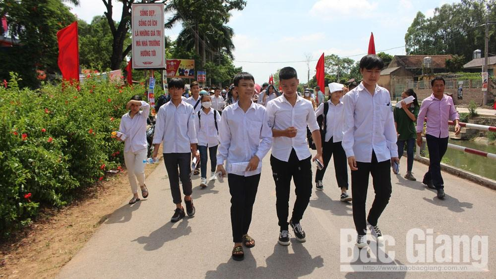
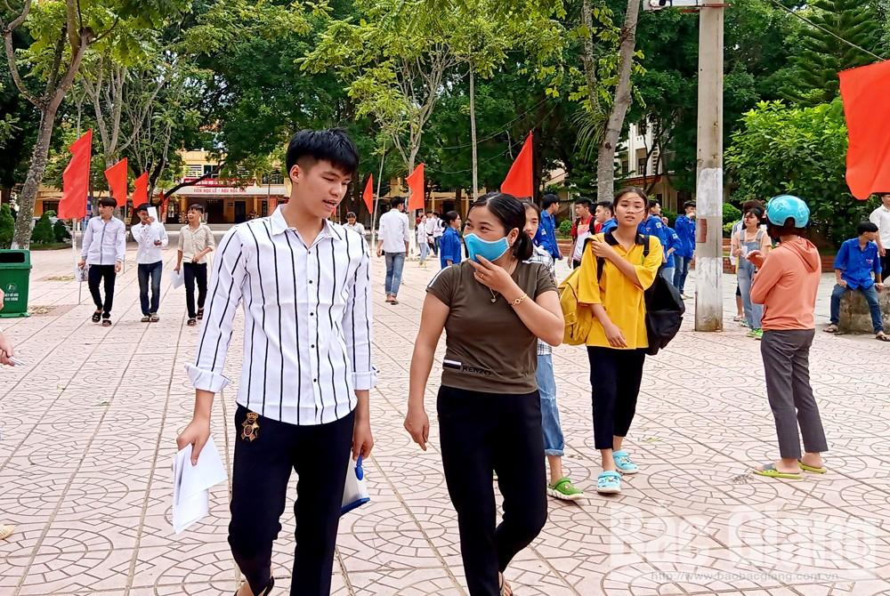
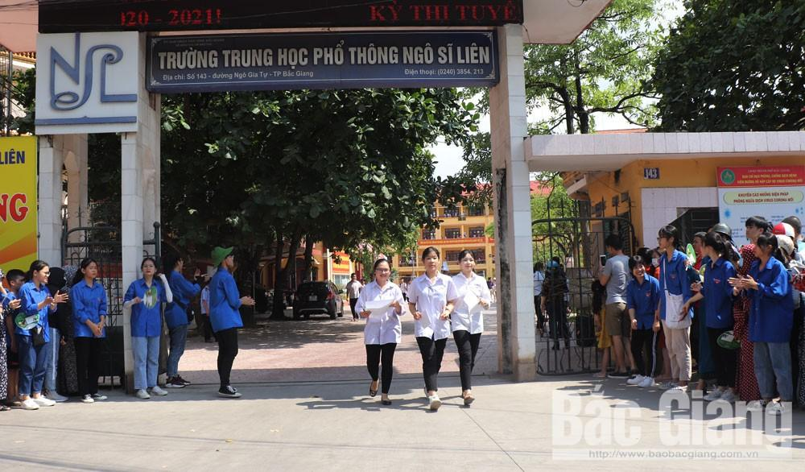
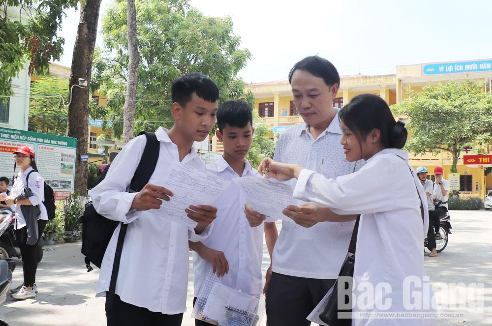

Kết thúc kỳ thi tuyển sinh lớp 10 tại Bắc Giang: Đề thi Toán giảm số lượng câu khó
(Theo - BGĐT) - Trưa 17/7, hơn 18,6 nghìn học sinh lớp 9 trên toàn tỉnh Bắc Giang đã kết thúc thi môn Toán, hoàn thành kỳ tuyển sinh vào lớp 10 THPT công lập năm học 2020-2021. Thời gian làm bài thi môn Toán diễn ra trong thời gian 120 phút. Đề thi gồm phần trắc nghiệm với 20 câu (3 điểm) và tự luận 5 câu (7 điểm), trong đó có những nội dung như: Giải phương trình, hệ phương trình, chứng minh tứ giác...
{kind=link}
|  |
Thí sinh tại điểm thi Trường THPT Lạng Giang số 1 ra về với tâm trạng phấn khởi sau khi kết thúc thi môn Toán. |
{kind=link}
Qua nắm bắt tại các hội đồng thi, nhiều học sinh phấn khởi vì làm được bài. Các em cảm nhận đề thi môn Toán năm nay vừa sức, thậm chí dễ hơn so với những năm trước.Em Lê Quang Trung, xã Yên Mỹ (Lạng Giang) cho biết: “Ở phần trắc nghiệm em làm khá nhanh, chính xác, riêng câu 11 và 16 khó hơn nên mất nhiều thời gian suy nghĩ”.
Em Tô Thị Minh, xã An Bá (Sơn Động) là thí sinh đầu tiên rời khỏi phòng thi tại điểm thi Trường THPT Sơn Động số 1 chia sẻ: “Đề thi đều nằm trong chương trình học và ôn tập. Ở phần trắc nghiệm em làm được hết, riêng phần tự luận ở câu 4 phần b và c hình học khó hơn nên có lẽ em không đạt điểm tuyệt đối”. Nhiều học sinh cũng chung suy nghĩ do bài hình và câu 5 ở phần tự luận khó hơn nên để đạt điểm tuyệt đối ở bài thi này không dễ song hoàn toàn có thể đạt điểm 7-8.
|  |
Phụ huynh chúc mừng, động viên con sau khi hoàn thành thi môn Toán tại điểm thi Trường THPT Sơn Động số 1. |
{kind=link}
Chung cảm nhận, em Hương Giang, Trường THCS Dĩnh Kế chia sẻ: “Với em, đề Toán năm nay không khó nhưng đòi hỏi cần có sự vận dụng kiến thức giữa các năm học với nhau chứ không chỉ riêng chương trình lớp 9. Em thấy khó nhất là câu b và c của bài hình và câu 5. Em nghĩ mình có thể đạt 7 điểm”.
Thầy giáo Nguyễn Văn Thọ, Phó Hiệu trưởng Trường THCS Ngô Sĩ Liên (TP Bắc Giang) - từng giảng dạy môn Toán lớp 9 nhiều năm nhận xét, trong bối cảnh dịch Covid-19, học sinh phải tạm nghỉ học nhiều tháng thì đề thi tuyển vào lớp 10 môn Toán năm nay là phù hợp, vừa sức đối với học sinh. Các dạng bài trong đề thi rất cơ bản, quen thuộc với các em.
|  |
Thí sinh tại điểm thi Trường THPT Ngô Sĩ Liên (TP Bắc Giang). |
{kind=link}
Đối với 20 câu phần trắc nghiệm đủ để kiểm tra các nội dung kiến thức cơ bản, số lượng câu khó giảm hơn các năm học trước. Phần tự luận, các dạng bài khá quen thuộc, được thầy, cô ôn luyện trong các buổi học và trong các đề ôn tập, mức độ đề có sự phân hóa rất hợp lý với các vùng miền và đối tượng học sinh. Với đề này thì các em chỉ cần trình bày cẩn thận, chắc chắn không khó có thể đạt được từ 7,5 đến 8 điểm, học sinh khá, giỏi có thể đạt 9 điểm hoặc hơn.
|  |
Thầy và trò Trường THCS Trần Phú trao đổi đề thi môn Toán tại điểm thi Trường THPT Ngô Sĩ Liên (TP Bắc Giang). |
{kind=link}
Kết thúc kỳ thi, phần đông học sinh làm được bài nên các bậc phụ huynh cũng có tâm lý phấn khởi. Chị Nguyễn Thị Dinh, thị trấn Thắng tâm sự: “Ai cũng muốn con mình đạt kết quả thi tốt nhưng tôi cũng không gây áp lực cho cháu và cũng không áp đặt mà luôn động viên, khuyên con chọn trường phù hợp với lực học”
|
Thông tin từ Sở Giáo dục và Đào tạo, kỳ thi vắng 114 thí sinh do ốm và không rõ lý do, nhiều nhất là điểm thi Trường THPT Mỏ Trạng (Yên Thế). Công tác tổ chức thi bảo đảm an toàn, nghiêm túc; sáng nay Hội đồng thi Trường THPT Yên Dũng 3 đình chỉ thi 1 thí sinh do vi phạm quy chế.Được biết, ngay sau khi kết thúc kỳ thi, Hội đồng chấm thi sẽ bắt đầu làm việc từ 14 giờ ngày 17/7; dự kiến công bố điểm thi vào ngày 28/7; công bố dự kiến điểm chuẩn vào ngày 13/8; công bố thí sinh trúng tuyển ngày 14/8/2020; thí sinh trúng tuyển nhập học từ ngày 15-20/8/2020.
Đối với kỳ thi tuyển sinh vào lớp 10 Trường THPT Chuyên Bắc Giang sẽ diễn ra ngày 18/7 tại Trường THPT Chuyên Bắc Giang với 921 hồ sơ dự thi, chỉ tiêu tuyển 350 em.